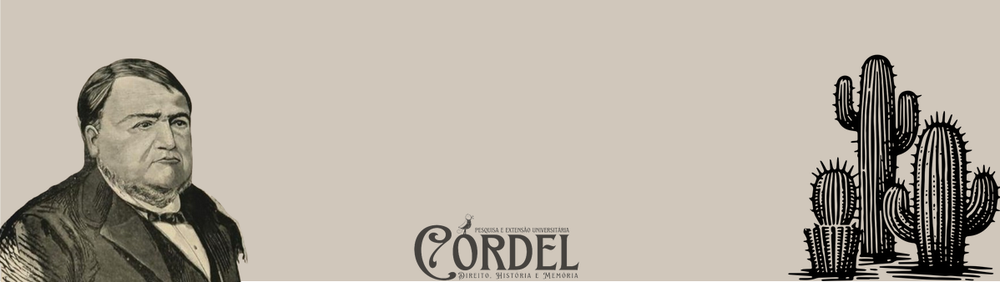

VERBETES
#T
#Teixeira de Freitas
Augusto Teixeira de Freitas (Cachoeira, 19 de agosto de 1816 — Niterói, 12 de dezembro de 1883) foi um renomado jurisconsulto brasileiro, frequentemente lembrado como o “Jurisconsulto do Império”. Sua obra e influência o posicionaram como uma das figuras mais relevantes no campo do Direito Civil no Brasil e em diversas partes da América Latina.
1. Formação AcadêmicaFilho do barão Antônio Teixeira de Freitas Barbosa e da baronesa Felicidade de Santa Rosa de Lima, Teixeira de Freitas iniciou sua formação na Academia das Ciências Sociais e Jurídicas de Olinda, em 1832. Transferiu-se para a Faculdade de Direito do Largo de São Francisco, em São Paulo, onde concluiu o segundo, terceiro e quarto anos do curso. Sujeito ao rigor acadêmico de seus professores, ele alcançou aprovação, embora, muitas vezes, apenas com notas simples, o que não impediu que fosse elogiado por suas habilidades e capacidades intelectuais. Em 1837, retornou a Olinda para concluir o curso com nota máxima.
2. Carreira ProfissionalAugusto Teixeira de Freitas teve uma carreira profissional marcada por contribuições significativas ao Direito no Brasil. Em 1838, foi nomeado juiz de direito na Bahia, pelo então vice-presidente do Estado Independente da Bahia, João Carneiro da Silva Rego. Em 1843, mudou-se para o Rio de Janeiro, onde abriu um escritório de advocacia na Rua da Quitanda e, no mesmo ano, foi um dos fundadores do Instituto dos Advogados do Brasil, ao lado de figuras como Josino do Nascimento Silva e Carvalho Moreira. Em 1844, foi nomeado advogado junto ao Conselho de Estado do Império, o que consolidou sua influência no cenário jurídico da época. Sua maior contribuição veio em 1855, quando foi contratado pelo governo para realizar a “Consolidação das Leis Civis”, publicada em 1858 e que organizou as normas civis do país de maneira sistemática. Em 1857, assumiu a presidência do Instituto dos Advogados Brasileiros, mas renunciou ao cargo pouco depois.
3. Consolidação das Leis Civis e Esboço de Código CivilEm 1855, Freitas foi contratado pelo governo imperial para compilar e organizar a legislação civil do país, o que resultou na Consolidação das Leis Civis de 1858, um marco na sistematização jurídica brasileira. Seu sucesso com a Consolidação levou o imperador D. Pedro II a encomendar, em 1859, um projeto de Código Civil, que Freitas chamou de Esboço de Código Civil, pois acreditava que ainda faltava muito para considerá-lo um código acabado. O Esboço, publicado em 1860, continha aproximadamente 5.000 artigos e influenciou significativamente o desenvolvimento do Direito Civil não só no Brasil, como em países da América Latina, incluindo Argentina, Paraguai, Uruguai, Chile e Nicarágua. Na Argentina, o código elaborado por Dalmacio Vélez Sarsfield teve Freitas como principal referência.
4. Desafios e Arquivamento do ProjetoEm 1866, conflitos com Martim Francisco Ribeiro de Andrada, ministro da Justiça à época, e com a comissão de revisão do Esboço desgastaram Teixeira de Freitas, que abandonou o projeto. Em 1872, o contrato foi formalmente rescindido, e o Esboço foi arquivado. Ainda assim, seu trabalho continuou a influenciar a legislação, culminando, por exemplo, no Código Civil de 1916, elaborado por Clóvis Beviláqua.
5. Últimos Anos e LegadoTeixeira de Freitas faleceu em 12 de dezembro de 1883, aos 67 anos, em sua residência em Niterói, sendo sepultado no cemitério de São Pedro de Maruí. Sua obra e contribuições continuam a ser referências fundamentais para o estudo do Direito Civil e para o desenvolvimento da ciência jurídica no Brasil e na América como um todo, eternizando seu papel como um dos maiores jurisconsultos da história brasileira.
Referências
Augusto Teixeira de Freitas - O grande jurisconsulto brasileiro. Disponível em:
https://www.ufpe.br/arquivoccj/curiosidades/-/asset_publisher/x1R6vFfGRYss/content/augusto-teixeira-de-freitas-o-grande-jurisconsulto-brasileiro/590249
POSADA, Estevan Lo Ré. Preservação da tradição jurídica luso-brasileira: Teixeira de Freitas e a introdução à consolidação das leis civis. Disponível em:
https://www.teses.usp.br/teses/disponiveis/2/2131/tde-31102006-172941/pt-br.php
ARAÚJO, Douglas Balbi. A influência de Teixeira de Freitas no Brasil e no mundo. Disponível em:
https://jus.com.br/artigos/1907/a-influencia-de-teixeira-de-freitas-no-brasil-e-no-mundo
Paul, Wolf (2001). «Teixeira de Freitas, Augusto». In:
Michael Stolleis. Juristen: ein biographisches Lexikon; von der Antike bis zum 20. Jahrhundert (em alemão) 2 ed. München: Beck. 225 páginas.
- Páginas
- Sobre
- Livros
- Verbetes
- Visitas Guiadas
- Equipe